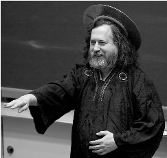

The Maui High Performance Computing Center is located in a single-story building in the dusty red hills just above the town of Kihei. Framed by million-dollar views and the multimillion dollar real estate of the Silversword Golf Course, the center seems like the ultimate scientific boondoggle. Far from the boxy, sterile confines of Tech Square or even the sprawling research metropolises of Argonne, Illinois and Los Alamos, New Mexico, the MHPCC seems like the kind of place where scientists spend more time on their tans than their post-doctoral research projects.
The image is only half true. Although researchers at the MHPCC do take advantage of the local recreational opportunities, they also take their work seriously. According to http://Top500.org, a web site that tracks the most powerful supercomputers in the world, the IBM SP Power3 supercomputer housed within the MHPCC clocks in at 837 billion floating-point operations per second, making it one of 25 most powerful computers in the world. Co-owned and operated by the University of Hawaii and the U.S. Air Force, the machine divides its computer cycles between the number crunching tasks associated with military logistics and high-temperature physics research.
Simply put, the MHPCC is a unique place, a place where the brainy culture of science and engineering and the laid-back culture of the Hawaiian islands coexist in peaceful equilibrium. A slogan on the lab’s 2000 web site sums it up: “Computing in paradise.”
It’s not exactly the kind of place you’d expect to find Richard Stallman, a man who, when taking in the beautiful view of the nearby Maui Channel through the picture windows of a staffer’s office, mutters a terse critique: “Too much sun.” Still, as an emissary from one computing paradise to another, Stallman has a message to deliver, even if it means subjecting his hacker eyes to painful solar glare.
The conference room is already full by the time I arrive to catch Stallman’s speech. The gender breakdown is a little better than at the New York speech, 85% male, 15% female, but not by much. About half of the audience members wear khaki pants and logo-encrusted golf shirts. The other half seems to have gone native. Dressed in the gaudy flower-print shirts so popular in this corner of the world, their faces are a deep shade of ochre. The only residual indication of geek status are the gadgets: Nokia cell phones, Palm Pilots, and Sony VAIO laptops.
Needless to say, Stallman, who stands in front of the room dressed in plain blue T-shirt, brown polyester slacks, and white socks, sticks out like a sore thumb. The fluorescent lights of the conference room help bring out the unhealthy color of his sun-starved skin. [1] His beard and hair are enough to trigger beads of sweat on even the coolest Hawaiian neck. Short of having the words “mainlander” tattooed on his forehead, Stallman couldn’t look more alien if he tried. [RMS: Is there something bad about looking different from others?]
As Stallman putters around the front of the room, a few audience members wearing T-shirts with the logo of the Maui FreeBSD Users Group (MFUG) race to set up camera and audio equipment. FreeBSD, a free software offshoot of the Berkeley Software Distribution, the venerable 1970s academic version of Unix, is technically a competitor to the GNU/Linux operating system. Still, in the hacking world, Stallman speeches are documented with a fervor reminiscent of the Grateful Dead and its legendary army of amateur archivists. As the local free software heads, it’s up to the MFUG members to make sure fellow programmers in Hamburg, Mumbai, and Novosibirsk don’t miss out on the latest pearls of RMS wisdom.
The analogy to the Grateful Dead is apt. Often, when describing the business opportunities inherent within the free software model, Stallman has held up the Grateful Dead as an example. In refusing to restrict fans’ ability to record live concerts, the Grateful Dead became more than a rock group. They became the center of a tribal community dedicated to Grateful Dead music. Over time, that tribal community became so large and so devoted that the band shunned record contracts and supported itself solely through musical tours and live appearances. In 1994, the band’s last year as a touring act, the Grateful Dead drew $52 million in gate receipts alone. [2]
While few software companies have been able to match that success, the tribal aspect of the free software community is one reason many in the latter half of the 1990s started to accept the notion that publishing software source code might be a good thing. Hoping to build their own loyal followings, companies such as IBM, Sun Microsystems, and Hewlett Packard have come to accept the letter, if not the spirit, of the Stallman free software message. Describing the GPL as the information-technology industry’s Magna Carta, ZDNet software columnist Evan Leibovitch sees the growing affection for all things GNU as more than just a trend. “This societal shift is letting users take back control of their futures,” Leibovitch writes. “Just as the Magna Carta gave rights to British subjects, the GPL enforces consumer rights and freedoms on behalf of the users of computer software.” [3]
The tribal aspect of the free software community also helps explain why 40-odd programmers, who might otherwise be working on physics projects or surfing the Web for windsurfing buoy reports, have packed into a conference room to hear Stallman speak.
Unlike the New York speech, Stallman gets no introduction. He also offers no self-introduction. When the FreeBSD people finally get their equipment up and running, Stallman simply steps forward, starts speaking, and steamrolls over every other voice in the room.
“Most of the time when people consider the question of what rules society should have for using software, the people considering it are from software companies, and they consider the question from a self-serving perspective,” says Stallman, opening his speech. “What rules can we impose on everybody else so they have to pay us lots of money? I had the good fortune in the 1970s to be part of a community of programmers who shared software. And because of this I always like to look at the same issue from a different direction to ask: what kind of rules make possible a good society that is good for the people who are in it? And therefore I reach completely different answers.”
Once again, Stallman quickly segues into the parable of the Xerox laser printer, taking a moment to deliver the same dramatic finger-pointing gestures to the crowd. He also devotes a minute or two to the GNU/Linux name.
“Some people say to me, ‘Why make such a fuss about getting credit for this system? After all, the important thing is the job is done, not whether you get recognition for it.’ Well, this would be wise advice if it were true. But the job wasn’t to build an operating system; the job is to spread freedom to the users of computers. And to do that we have to make it possible to do everything with computers in freedom.” [4]
Adds Stallman, “There’s a lot more work to do.”
For some in the audience, this is old material. For others, it’s a little arcane. When a member of the golf-shirt contingent starts dozing off, Stallman stops the speech and asks somebody to wake the person up.
“Somebody once said my voice was so soothing, he asked if I was some kind of healer,” says Stallman, drawing a quick laugh from the crowd. “I guess that probably means I can help you drift gently into a blissful, relaxing sleep. And some of you might need that. I guess I shouldn’t object if you do. If you need to sleep, by all means do.”
The speech ends with a brief discussion of software patents, a growing issue of concern both within the software industry and within the free software community. Like Napster, software patents reflect the awkward nature of applying laws and concepts written for the physical world to the frictionless universe of information technology.
Copyright law and patent law work differently, and have totally different effects in the software field. The copyright on a program controls the copying and adaptation of that program’s code, and it belongs to the program’s developer. But copyright does not cover ideas. In other words, a developer is free, under copyright, to implement in his own code features and commands he has seen in existing programs. Those aspects are ideas, not expression, and thus outside the scope of copyright law.
It is likewise lawful – though hard work – to decode how a binary program works, and then implement the same ideas and algorithms in different code. This practice is known as “reverse engineering.”
Software patents work differently. According to the U.S. Patent Office, companies and individuals can obtain patents for computing ideas that are innovative (or, at least, unknown to the Patent Office). In theory, this allows the patent-holder to trade off disclosure of the technique for a specific monopoly lasting a minimum of 20 years after the patent filing. In practice, the disclosure is of limited value to the public, since the operation of the program is often self-evident, and could in any case be determined by reverse engineering. Unlike copyright, a patent gives its holder the power to forbid the independent development of software programs which use the patented idea.
In the software industry, where 20 years can cover the entire life cycle of a marketplace, patents take on a strategic weight. Where companies such as Microsoft and Apple once battled over copyright and the “look and feel” of various technologies, today’s Internet companies use patents as a way to stake out individual applications and business models, the most notorious example being Amazon.com’s 2000 attempt to patent the company’s “one-click” online shopping process. For most companies, however, software patents have become a defensive tool, with cross-licensing deals balancing one set of corporate patents against another in a tense form of corporate detente. Still, in a few notable cases of computer encryption and graphic imaging algorithms, software vendors have successfully stifled rival developments. For instance, some font-rendering features are missing from free software because of patent threats from Apple.
For Stallman, the software-patent issue dramatizes the need for eternal hacker vigilance. It also underlines the importance of stressing the political benefits of free software programs over the competitive benefits. Stallman says competitive performance and price, two areas where free software operating systems such as GNU/Linux and FreeBSD already hold a distinct advantage over their proprietary counterparts, are side issues compared to the large issues of user and developer freedom.
This position is controversial within the community: open source advocates emphasize the utilitarian advantages of free software over the political advantages. Rather than stress the political significance of free software programs, open source advocates have chosen to stress the engineering integrity of the hacker development model. Citing the power of peer review, the open source argument paints programs such as GNU/Linux or FreeBSD as better built, better inspected and, by extension, more trustworthy to the average user.
That’s not to say the term “open source” doesn’t have its political implications. For open source advocates, the term open source serves two purposes. First, it eliminates the confusion associated with the word “free,” a word many businesses interpret as meaning “zero cost.” Second, it allows companies to examine the free software phenomenon on a technological, rather than ethical, basis. Eric Raymond, cofounder of the Open Source Initiative and one of the leading hackers to endorse the term, explained his refusal to follow Stallman’s political path in a 1999 essay, titled “Shut Up and Show Them the Code”:
RMS’s rhetoric is very seductive to the kind of people we are. We hackers are thinkers and idealists who readily resonate with appeals to “principle” and “freedom” and “rights.” Even when we disagree with bits of his program, we want RMS’s rhetorical style to work; we think it ought to work; we tend to be puzzled and disbelieving when it fails on the 95% of people who aren’t wired like we are. [5]
Included among that 95%, Raymond writes, are the bulk of business managers, investors, and nonhacker computer users who, through sheer weight of numbers, tend to decide the overall direction of the commercial software marketplace. Without a way to win these people over, Raymond argues, programmers are doomed to pursue their ideology on the periphery of society:
When RMS insists that we talk about “computer users’ rights,” he’s issuing a dangerously attractive invitation to us to repeat old failures. It’s one we should reject – not because his principles are wrong, but because that kind of language, applied to software, simply does not persuade anybody but us. In fact, it confuses and repels most people outside our culture. [6]
Stallman, however, rejects Raymond’s premises:
Raymond’s attempt to explain our failure is misleading because we have not failed. Our goal is large, and we have a long way to go, but we have also come a long way.
Raymond’s pessimistic assertion about the values of non-hackers is an exaggeration. Many non-hackers are more concerned with the political issues we focus on than with the technical advantages that open source emphasizes. This often includes political leaders too, though not in all countries.
It was the ethical ideals of free software, not “better software,” which persuaded the presidents of Ecuador and Brazil to move government agencies to free software. They are not geeks, but they understand freedom.
But the principal flaw in the open source argument, according to Stallman, is that it leads to weaker conclusions. It convinces many users to run some programs which are free, but does not offer them any reason to migrate entirely to free software. This partially gives them freedom, but does not teach them to recognize it and value it as such, so they remain likely to let it drop and lose it. For instance, what happens when the improvement of free software is blocked by a patent?
Most open source advocates are equally, if not more, vociferous as Stallman when it comes to opposing software patents. So too are most proprietary software developers, since patents threaten their projects too. However, pointing to software patents’ tendency to put areas of software functionality off limits, Stallman contrasts what the free software idea and the open source idea imply about such cases.
“It’s not because we don’t have the talent to make better software,” says Stallman. “It’s because we don’t have the right. Somebody has prohibited us from serving the public. So what’s going to happen when users encounter these gaps in free software? Well, if they have been persuaded by the open source movement that these freedoms are good because they lead to more-powerful reliable software, they’re likely to say, ‘You didn’t deliver what you promised. This software’s not more powerful. It’s missing this feature. You lied to me.’ But if they have come to agree with the free software movement, that the freedom is important in itself, then they will say, ‘How dare those people stop me from having this feature and my freedom too.’ And with that kind of response, we may survive the hits that we’re going to take as these patents explode.”
Watching Stallman deliver his political message in person, it is hard to see anything confusing or repellent. Stallman’s appearance may seem off-putting, but his message is logical. When an audience member asks if, in shunning proprietary software, free software proponents lose the ability to keep up with the latest technological advancements, Stallman answers the question in terms of his own personal beliefs. “I think that freedom is more important than mere technical advance,” he says. “I would always choose a less advanced free program rather than a more advanced nonfree program, because I won’t give up my freedom for something like that [advance]. My rule is, if I can’t share it with you, I won’t take it.”
In the minds of those who assume ethics means religion, such answers reinforce the quasi-religious nature of the Stallman message. However, unlike a Jew keeping kosher or a Mormon refusing to drink alcohol, Stallman is not obeying a commandment, but simply refusing to cede his freedom. His speech explains the practical requisites for doing so: a proprietary program takes away your freedom, so if you want freedom, you need to reject the program.
Stallman paints his decision to use free software in place of proprietary in the color of a personal belief he hopes others will come to share. As software evangelists go, Stallman avoids forcing those beliefs down listeners’ throats. Then again, a listener rarely leaves a Stallman speech not knowing where the true path to software righteousness lies.
As if to drive home this message, Stallman punctuates his speech with an unusual ritual. Pulling a black robe out of a plastic grocery bag, Stallman puts it on. Then he pulls out a reflective brown computer disk and places it on his head. The crowd lets out a startled laugh.
“I am St. IGNUcius of the Church of Emacs,” says Stallman, raising his right hand in mock-blessing. “I bless your computer, my child.”

The laughter turns into full-blown applause after a few seconds. As audience members clap, the computer disk on Stallman’s head catches the glare of an overhead light, eliciting a perfect halo effect. In the blink of an eye, Stallman resembles a Russian religious icon.
“Emacs was initially a text editor,” says Stallman, explaining the getup. “Eventually it became a way of life for many and a religion for some. We call this religion the Church of Emacs.”
The skit is a lighthearted moment of self-parody, a humorous return-jab at the many people who might see Stallman’s form of software asceticism as religious fanaticism in disguise. It is also the sound of the other shoe dropping – loudly. It’s as if, in donning his robe and halo, Stallman is finally letting listeners off the hook, saying, “It’s OK to laugh. I know I’m weird.” [RMS: To laugh at someone for being weird is boorish, and it is not my intention to excuse that. But I hope people will laugh at my St. IGNUcius comedy routine.]
Discussing the St. IGNUcius persona afterward, Stallman says he first came up with it in 1996, long after the creation of Emacs but well before the emergence of the “open source” term and the struggle for hacker-community leadership that precipitated it. At the time, Stallman says, he wanted a way to “poke fun at himself,” to remind listeners that, though stubborn, Stallman was not the fanatic some made him out to be. It was only later, Stallman adds, that others seized the persona as a convenient way to play up his reputation as software ideologue, as Eric Raymond did in an 1999 interview with the Linux.com web site:
When I say RMS calibrates what he does, I’m not belittling or accusing him of insincerity. I’m saying that like all good communicators he’s got a theatrical streak. Sometimes it’s conscious – have you ever seen him in his St. IGNUcius drag, blessing software with a disk platter on his head? Mostly it’s unconscious; he’s just learned the degree of irritating stimulus that works, that holds attention without (usually) freaking people out. [7]
Stallman takes issue with the Raymond analysis. “It’s simply my way of making fun of myself,” he says. “The fact that others see it as anything more than that is a reflection of their agenda, not mine.”
That said, Stallman does admit to being a ham. “Are you kidding?” he says at one point. “I love being the center of attention.” To facilitate that process, Stallman says he once enrolled in Toastmasters, an organization that helps members bolster their public-speaking skills and one Stallman recommends highly to others. He possesses a stage presence that would be the envy of most theatrical performers and feels a link to vaudevillians of years past. A few days after the Maui High Performance Computing Center speech, I allude to the 1999 LinuxWorld performance and ask Stallman if he has a Groucho Marx complex – i.e., the unwillingness to belong to any club that would have him as a member. [8] Stallman’s response is immediate: “No, but I admire Groucho Marx in a lot of ways and certainly have been in some things I say inspired by him. But then I’ve also been inspired in some ways by Harpo.”
The Groucho Marx influence is certainly evident in Stallman’s lifelong fondness for punning. Then again, punning and wordplay are common hacker traits. Perhaps the most Groucho-like aspect of Stallman’s personality, however, is the deadpan manner in which the puns are delivered. Most come so stealthily – without even the hint of a raised eyebrow or upturned smile – you almost have to wonder if Stallman’s laughing at his audience more than the audience is laughing at him.
Watching members of the Maui High Performance Computer Center laugh at the St. IGNUcius parody, such concerns evaporate. While not exactly a standup act, Stallman certainly possesses the chops to keep a roomful of engineers in stitches. “To be a saint in the Church of Emacs does not require celibacy, but it does require making a commitment to living a life of moral purity,” he tells the Maui audience. “You must exorcise the evil proprietary operating systems from all your computers, and then install a wholly [holy] free operating system. And then you must install only free software on top of that. If you make this commitment and live by it, then you too will be a saint in the Church of Emacs, and you too may have a halo.”
The St. IGNUcius skit ends with a brief inside joke. On most Unix systems and Unix-related offshoots, the primary competitor program to Emacs is vi, pronounced vee-eye, a text-editing program developed by former UC Berkeley student and current Sun Microsystems chief scientist, Bill Joy. Before doffing his “halo,” Stallman pokes fun at the rival program. “People sometimes ask me if it is a sin in the Church of Emacs to use vi,” he says. “Using a free version of vi is not a sin; it is a penance. So happy hacking.” [9]
After a brief question-and-answer session, audience members gather around Stallman. A few ask for autographs. “I’ll sign this,” says Stallman, holding up one woman’s print out of the GNU General Public License, “but only if you promise me to use the term GNU/Linux instead of Linux” (when referring to the system), “and tell all your friends to do likewise.”
The comment merely confirms a private observation. Unlike other stage performers and political figures, Stallman has no “off” mode. Aside from the St. IGNUcius character, the ideologue you see onstage is the ideologue you meet backstage. Later that evening, during a dinner conversation in which a programmer mentions his affinity for “open source” programs, Stallman, between bites, upbraids his tablemate: “You mean free software. That’s the proper way to refer to it.”
During the question-and-answer session, Stallman admits to playing the pedagogue at times. “There are many people who say, ‘Well, first let’s invite people to join the community, and then let’s teach them about freedom.’ And that could be a reasonable strategy, but what we have is almost everybody’s inviting people to join the community, and hardly anybody’s teaching them about freedom once they come in.”
The result, Stallman says, is something akin to a third-world city. “You have millions of people moving in and building shantytowns, but nobody’s working on step two: getting them out of those shantytowns. If you think talking about software freedom is a good strategy, please join in doing step two. There are plenty working on step one. We need more people working on step two.”
Working on “step two” means driving home the issue that freedom, not acceptance, is the root issue of the free software movement. Those who hope to reform the proprietary software industry from the inside are on a fool’s errand. “Change from the inside is risky,” Stallman stays. “Unless you’re working at the level of a Gorbachev, you’re going to be neutralized.”
Hands pop up. Stallman points to a member of the golf shirt-wearing contingent. “Without patents, how would you suggest dealing with commercial espionage?”
“Well, those two questions have nothing to do with each other, really,” says Stallman.
“But I mean if someone wants to steal another company’s piece of software.”
Stallman’s recoils as if hit by a poisonous spray. “Wait a second,” Stallman says. “Steal? I’m sorry, there’s so much prejudice in that statement that the only thing I can say is that I reject that prejudice.” Then he turns to the substance of the question. “Companies that develop nonfree software and other things keep lots and lots of trade secrets, and so that’s not really likely to change. In the old days – even in the 1980s – for the most part programmers were not aware that there were even software patents and were paying no attention to them. What happened was that people published the interesting ideas, and if they were not in the free software movement, they kept secret the little details. And now they patent those broad ideas and keep secret the little details. So as far as what you’re describing, patents really make no difference to it one way or another.”
“But if it doesn’t affect their publication,” a new audience member jumps in, his voice trailing off almost as soon as he starts speaking.
“But it does,” Stallman says. “Their publication is telling you that this is an idea that’s off limits to the rest of the community for 20 years. And what the hell good is that? Besides, they’ve written it in such a hard way to read, both to obfuscate the idea and to make the patent as broad as possible, that it’s basically useless looking at the published information [in the patent] to learn anything anyway. The only reason to look at patents is to see the bad news of what you can’t do.”
The audience falls silent. The speech, which began at 3:15, is now nearing the 5:00 whistle, and most listeners are already squirming in their seats, antsy to get a jump start on the weekend. Sensing the fatigue, Stallman glances around the room and hastily shuts things down. “So it looks like we’re done,” he says, following the observation with an auctioneer’s “going, going, gone” to flush out any last-minute questioners. When nobody throws their hand up, Stallman signs off with a traditional exit line.
“Happy hacking,” he says.
1 RMS: The idea that skin can be “sun-starved” or that paleness is “unhealthy” is dangerous misinformation; staying out of the sun can’t hurt you as long as you have enough Vitamin D. What damages the skin, and can even kill you, is excessive exposure to sunlight.
2 See “Grateful Dead Time Capsule: 1985-1995 North American Tour Grosses,” http://www.dead101.com/1197.htm.
3 See Evan Leibovitch, “Who’s Afraid of Big Bad Wolves,” ZDNet Tech Update (December 15, 2000), http://www.zdnet.com/news/whos-afraid-of-the-big-bad-wolves/298394.
4 For narrative purposes, I have hesitated to go in-depth when describing Stallman’s full definition of software “freedom.” The GNU Project web site lists four fundamental components:
For more information, please visit “The Free Software Definition” at http://www.gnu.org/philosophy/free-sw.html.
5 See Eric Raymond, “Shut Up and Show Them the Code,” online essay, (June 28, 1999), http://www.catb.org/~esr/writings/shut-up-and-show-them.html.
6 Ibid.
7 See “Guest Interview: Eric S. Raymond,” Linux.com (May 18, 1999), http://www.linux.com/interviews/19990518/8/.
8 RMS: Williams misinterprets Groucho’s famous remark by treating it as psychological. It was intended as a jab at the overt antisemitism of many clubs, which was why they would refuse him as a member. I did not understand this either until my mother explained it to me. Williams and I grew up when bigotry had gone underground, and there was no need to veil criticism of bigotry in humor as Groucho did.
9 The service of the Church of Emacs has developed further since 2001. Users can now join the Church by reciting the Confession of the Faith: “There is no system but GNU, and Linux is one of its kernels.” Stallman sometimes mentions the religious ceremony known as the Foobar Mitzvah, the Great Schism between various rival versions of Emacs, and the cult of the Virgin of Emacs (which refers to any person that has not yet learned to use Emacs). In addition, “vi vi vi” has been identified as the Editor of the Beast.